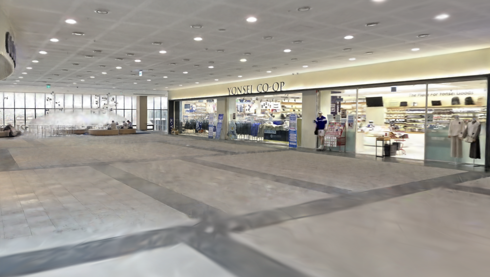
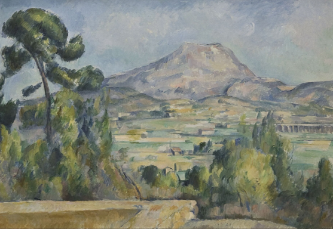
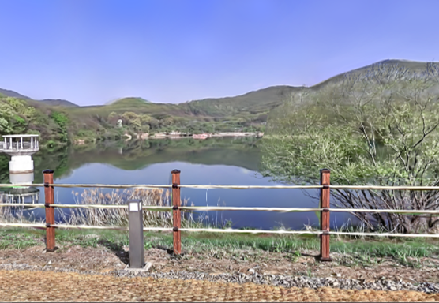
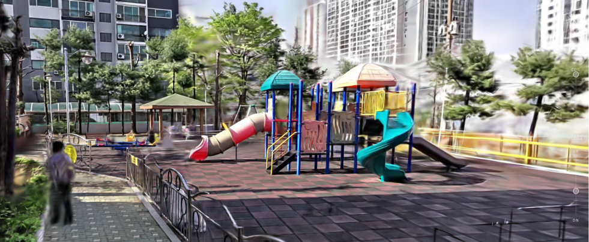

Presence Before Synchronization
Rethinking Digital Twins for Community Rebuilding
Hyeogjin Noh · CEO at voidbox Inc.
SNU × TMU Annual Workshop · 2026

The empty Baekyangnuri hall in Yonsei University after the exhibition.
We scan buildings and places with 3D Gaussian Splatting, and turn them into spaces you can walk through in a web browser.
A graduation exhibition lasts only five days.
A neighbourhood is redeveloped.
The digital twin is offered as the way to keep such places. But keep what — the space, what happened in it, or the community itself?

Alberti · 1435 · one fixed point

Cézanne · 1900s · many separate glances

3DGS · 2023 · thousands of them, optimized

A playground we scanned. Everything is sharp except the person walking through it.
The optimization assumes the scene did not change while you were photographing it.
- Anything that moved is not reconstructed as an object — it is baked in as a smear.
- What survives is that he was there. What is lost is where he was.
- So the medium is good at space on the condition that events are excluded.

Physical — June 4–8, 2026 · five days

Virtual — opened June 5, 2026 · still open today
A partnership between the department and voidbox: run one graduation exhibition in two places at once, and see whether the two could behave as a single event.

The curation tool — works positioned inside the scanned hall.
- We scanned the exhibition hall before installation.
- A curation tool let the department place each student's work into the scanned space, from a plan view.
- An archive site wrapped it: navigation, notices, and a page per work.
So the virtual exhibition was not a video or a photo gallery. It was the hall itself, with the show installed in it.

The interaction layer, as designed.
An interaction layer — comments, and two-way sync between the physical and the virtual exhibition.
Something happening in the hall should change the virtual exhibition. Something happening in the virtual exhibition should change the hall.
This is where most of our design effort went. It is the second layer — our attempt to lay events back over the geometry.
If the two spaces act on each other they become one event; if they become one event, the online and offline participants become one community. That was the bet.
physical → virtual
virtual → physical
Eleven interactions in total.
- The coupling we designed was bidirectional. In practice one of the two directions never ran at all — the virtual exhibition could only watch.
- The second layer never formed. We laid it over the geometry and it did not take.
- Limitation. This says our interaction layer was not used. It does not show that interaction is impossible — one event, five days, one department, no control condition.
At some point we stopped asking why people didn't use what we built, and started asking what they did instead.
— not a bounce
No interaction feature was involved in any of this. People arrived, and walked around.
The physical exhibition was dismantled in June. The virtual one is open right now.
The scan was good enough that going there counted as having gone.
The feedback came back repeatedly as some version of the same sentence: this is close enough that I don't feel I missed it.
Scan quality was the thing we treated as a technical baseline rather than as the product. It turned out to be the product.
Presence before synchronization.
We optimized the coupling. What carried the project was the fidelity of simply being there.
We measured the wrong thing.
We built metrics for interaction; the metric that mattered was how long the space stayed open. Note the asymmetry — we know the virtual attendance exactly (813) and have no idea what the physical attendance was. We never counted.
Not simultaneity, but asynchrony.
Nobody wanted to be in two places at once. They wanted to be in one place, later.

The school as it currently stands, scanned.
If what we actually deliver is presence — who else needs it?
- A rural county losing population.
- A small elementary school to be converted and extended as a special-education school.
- An open design competition, which we entered.
Not a community case study — this is what we did with the finding.

Low-density point cloud, extracted alongside the Gaussians.
- A school built decades ago; the drawings are old and incomplete.
- The scan stands in for going out and measuring it.
- Gaussians are appearance, not geometry — so we extract a low-density point cloud alongside them. Not survey-grade, but dimensionable.
Good enough to design against. I would not hand it to a structural engineer.

Our competition proposal, overlaid on the scan.
The proposal is judged inside the existing place, not against an abstracted model of it.
We overlay the design directly onto the scan and walk through it. Daylight, circulation and the relationship to what is already there stay visible throughout, instead of being reconstructed from drawings.
The user of the twin here is not a visitor. It is the designer.
The scan will outlive the school's current state.
At Yonsei that was an accident — we found it out afterwards. Here it is deliberate. This building is about to be rebuilt for its community, and the scan is the last full record of what it was before. Which is also a different posture toward the existing than designing on a cleared model.
Competition result pending.
We spent a long time trying to remove this blur. It is the only place in the whole reconstruction where something actually happened.
Presence before synchronization.
What we don't have yet: whether an archive can become a place where events continue, rather than a monument.
- Can two spaces be one event — and does anyone actually want them to be?
- What would it take for an archive to become a place where events continue?
- If a twin makes presence countable, what does it make invisible?
Hyeogjin Noh · hyeogjin.noh@voidbox.ai · nubim.voidbox.ai
"A thing in space is given to us, essentially, only through adumbrations."
— Edmund Husserl, Ideen I (1913), §41
The object is never given whole; it is given as partial profiles, which consciousness synthesises across the movement of the body. Map that onto the pipeline — the object, the input images, the scanner's walking path, the optimization. 3DGS is arguably that idea turned into an algorithm.
"…the Cartographers Guild drew a Map of the Empire whose size was that of the Empire, coinciding point for point with it. Succeeding Generations… delivered it up to the Inclemencies of Sun and Winters."
— Jorge Luis Borges, "Del rigor en la ciencia", 1946
Asked whether we are building the 1:1 map: our data says fidelity alone neither made the archive valuable nor useless. What made it valuable was that it stayed open. Borges's map failed because nobody could stand inside it.
Archive
Knowledge preserved in enduring media — text, image, object, building.
Repertoire
Knowledge transmitted only through embodied practice — gesture, speech, ritual, encounter.
3DGS is by nature an archive medium; the events at an exhibition are repertoire. Our nine comments were an attempt to graft one onto the other, and it did not take.
Diana Taylor, The Archive and the Repertoire, Duke University Press, 2003.